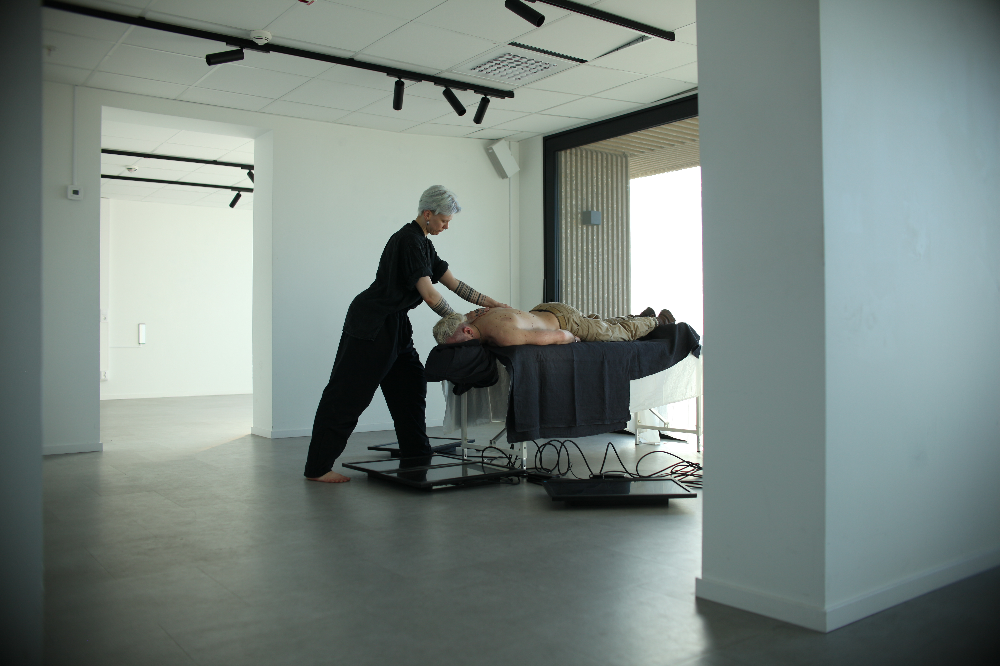
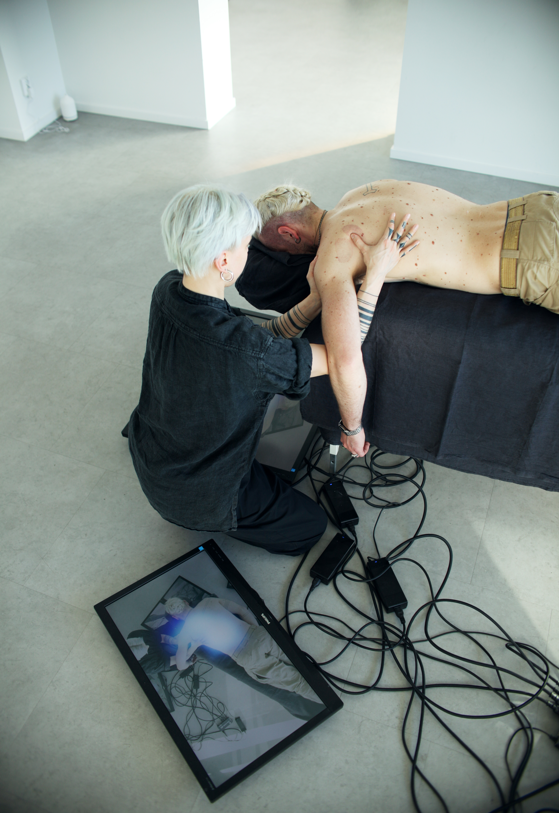
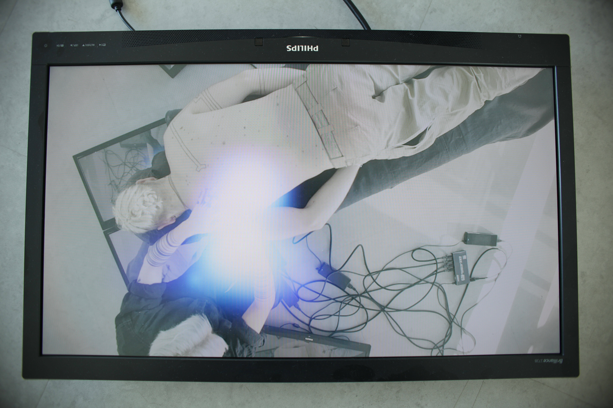
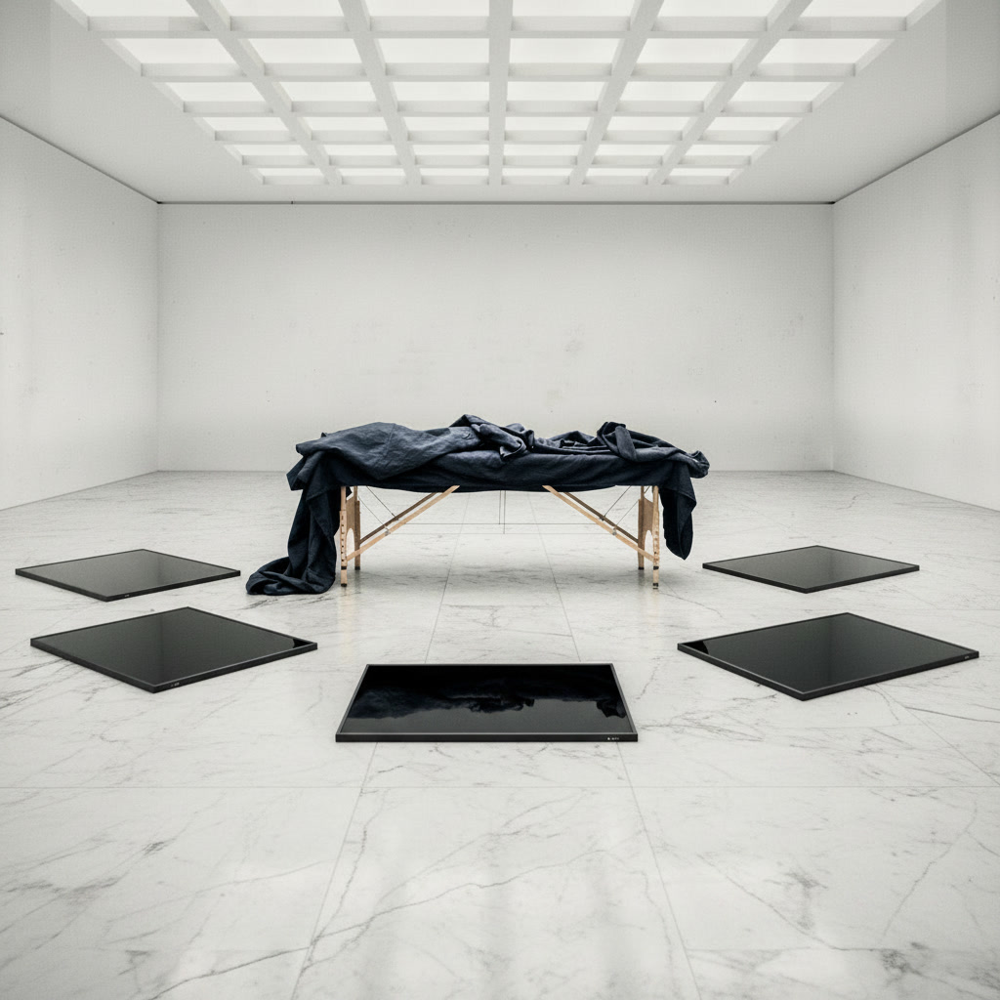

XR Installation — 2026
What transactions take place in ritualized contexts of connection, and how can technology be used to reveal them?
Concept
Technology can unveil dimensions otherwise hidden to us. During a live bodywork session, a camera tracks the points where hand touches body. Each touch is rendered visible as a luminous particle cloud, projected onto screens on the floor. The work questions the position of the viewer and what transactions take place in ritualized contexts of connection. Processes otherwise undetected such as the energetic exchange and the release of tension become visible to the naked eye, illuminating the power of the tactile.
Sphere of Touch is part of the ongoing series Metaphysical Archaeology, which investigates intimacy and the unseen forces that flow between bodies as they traverse both physical and virtual worlds. This live installation is a new work, still in development, shown for the first time at Helix Art Space, June 2026.



Technical
Sphere of Touch was built in Unity using VFX Graph for real-time particle rendering. Hand joint positions are tracked using a neural network running on-device, detecting 21 points per hand and feeding live positional data into the particle system each frame. Two hands are tracked simultaneously, with particles distributed along the bones and colored by movement. Still hands glow deep blue, moving hands shift toward cyan and lavender.
The live camera feed comes from an iPad sent into Unity via Spout, a GPU texture-sharing protocol that keeps latency near zero. The output is projected across four floor-mounted screens arranged as a single continuous surface, creating an immersive visual layer that responds in real time to touch during the bodywork session. One of the screens is positioned directly beneath the headrest of the massage table, returning a view to the receiver that the format and power dynamics of bodywork typically denies them.
Early development used AI-generated sketches to explore the visual language before building in Unity. Using digital tools as part of the sketching process was intentional since the contrast between touch as one of humanity's oldest tools and particle fields as one of its newest is precisely what the piece is made of.
